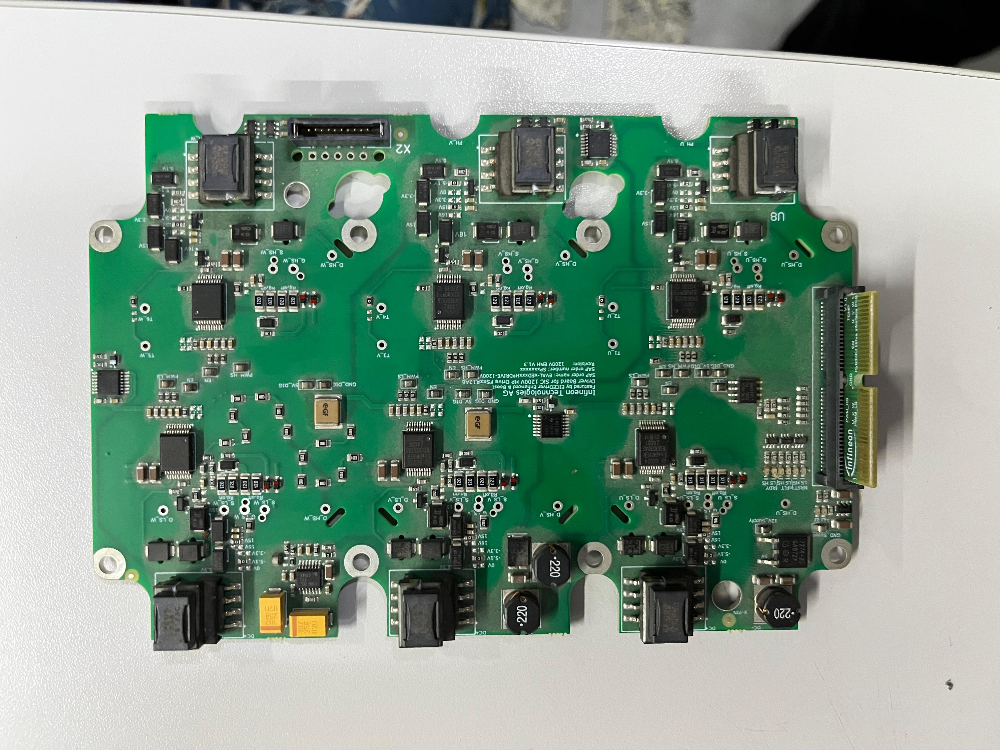
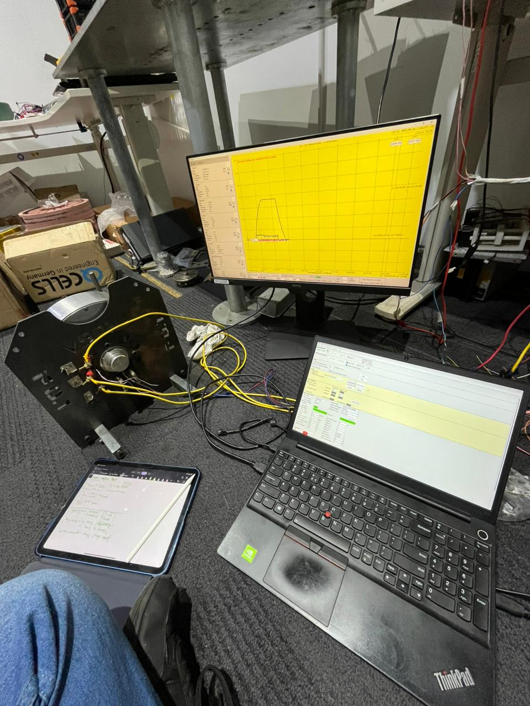
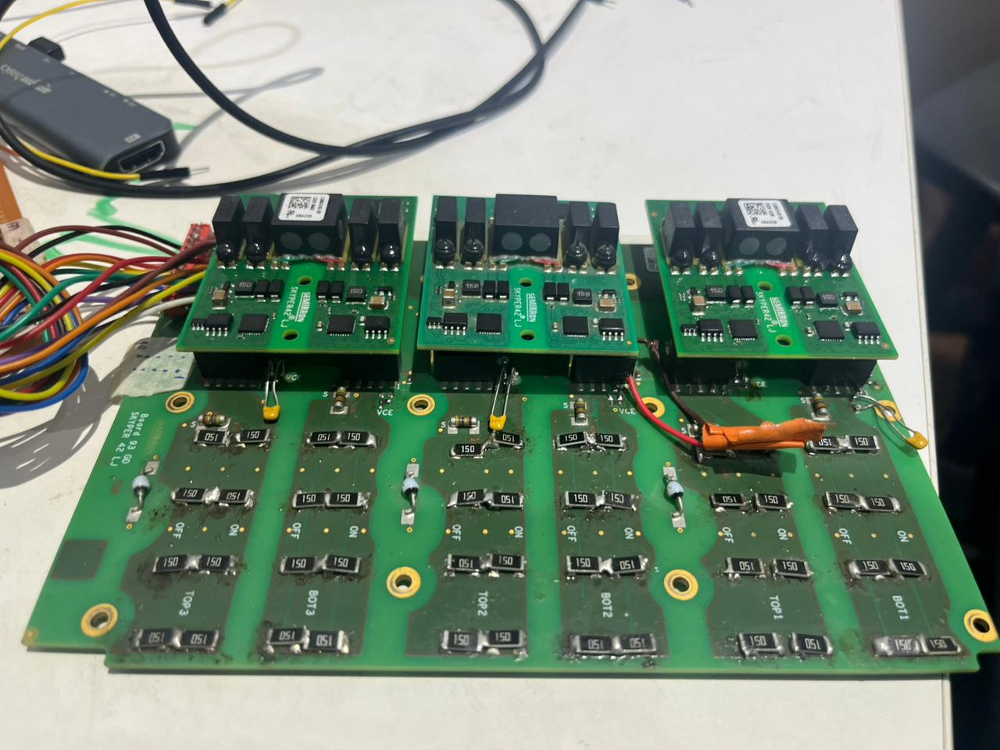
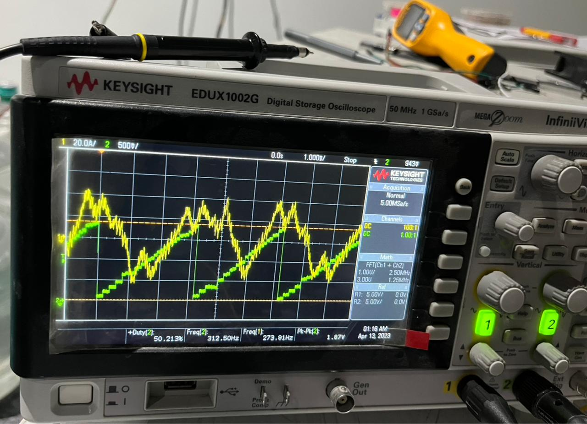
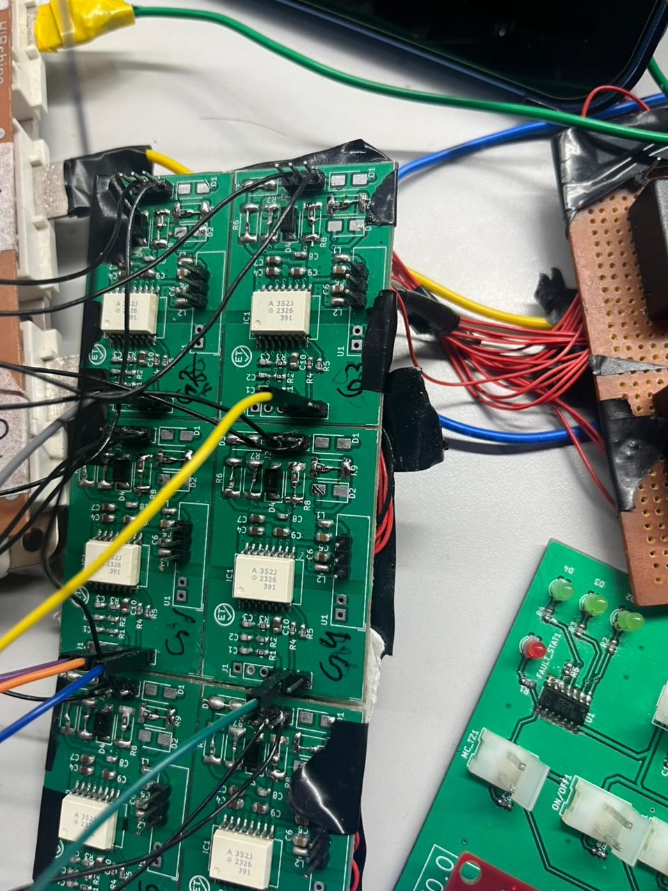

Power Electronics Engineer | EV Systems & Control Specialist
I am an engineer with a background in power electronics and electric drive systems, working primarily on high-voltage EV applications. My work spans power electronics hardware, embedded software, and system-level integration, with a strong focus on traction inverters for medium- and heavy-duty electric vehicles.
My interest in power electronics began during my Master's project, where I designed and developed a 3.5 kVA grid-tied photovoltaic inverter, integrating both hardware and software. This work included the implementation of grid-synchronization algorithms such as SOGI-FLL, along with various PWM techniques for inverter control.
At TRESA Motors, I was involved in the design and development of an 800 V, 150 kW traction inverter, contributing to system-level requirement definition while considering functional safety aspects. My responsibilities included testing and validation of IGBT- and SiC-based power modules (such as SkiM and HybridPACK), as well as working with gate driver platforms including SKYPER 42LJR and Infineon 1EDI3051AS.
In addition to custom inverter development, I have worked extensively on testing, validation, and integration of off-the-shelf high-voltage EV components in commercial electric trucks. This includes systems such as DC–DC converters, traction inverters, air brake compressors, steering pumps, vehicle control units, and battery management systems. Hands-on work at this level has provided a strong understanding of EV architecture, including power flow, torque characteristics, derating strategies, and protection mechanisms.
Currently, I work on Battery Management Systems and e-Drive systems at Daimler Truck Innovation Center India, with a focus on functional testing, HIL validation, and high-voltage lab setup. In parallel, I continue to pursue personal technical projects, including the development of motor control algorithms for BLDC motors, as part of ongoing learning and experimentation.
I aim to continue learning and working on cutting-edge technologies that contribute to efficient, safe, and sustainable electric mobility.